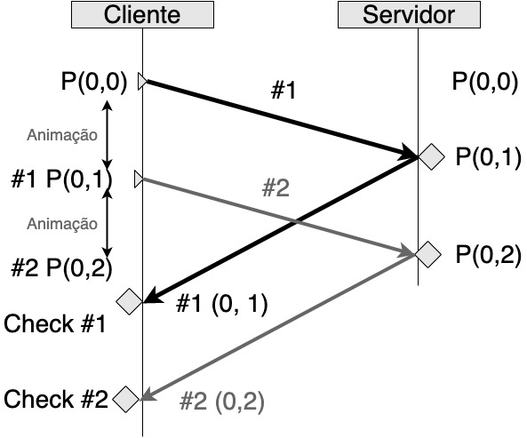

Desenvolvimento de Jogos Online com Rust
Por Julia Naomi Boeira.

Escrever um livro open source é um trablho que precisa de incentivo e por isso Github Sponsor e Patreon são coisas importantes, pois além de atuarem como incetivo, são um bomr econhecimento do nosso trabalho. Escrevi bastantes livros pela casa do código, mas em especial no assunto Rust e Games eu sinto que falta alcance, e por isso gostaria de continuar produzindo esse tipo de material.
Sobre o livro
Até o momento planejei 3 partes para este livro:
- Conceitos Básicos, onde vamos falar sobre como funciona um jogo online e quais são suas limitações.
- Jogo da cobrinha com a engine Bevy, essa é a parte menos criativa do processo e é uma cópia traduzida deste tutorial Bevy Snake Tutorial. A diferença é que vou adicionar elementos de um jogo multiplayer local.
- Servidor autoritário com a Bevy.
ESPERO QUE APROVEITEM A LEITURA e feedbacks são bem vindos.
Quem sou eu
Eu sou uma desenolvedora de jogos na Ubisoft Winnipeg atuando no desenvolvimento de sistemas online, middlewares e ferramentas para jogos. Trabalho principalmente com C++, mas um pouco de C# e Rust. Sou autora dos livros:
- 📖 Lean Game Development - Inglês - Apress
- 📖 Lean Game Development - Português - Casa do Código
- 📖 Programação Funcional e Concorrente em Rust - Casa do Código
- 📖 TDD para Games - Casa do Código
- 📖 [OPEN SOURCE] Desenvolvimento Web com Rust
E atualmente estou desenvolvendo em paralelo a este livro o livro Unity FPS game with TDD - Inglês.
Tenho atuado como evangelista voluntaria de Rust desde 2017 quando me deparei com Rust pela primeira vez e percebi que esta maravilhosa linguagem era um raio de esperança nos problemas que eu tinha no desenvolvimento de jogos com C++.
Hobbies como engenheira são aprender novas linguagens, em especial de paradigmas diferentes ou que pelo menos possuem uma forma bem diferente de resolver problemas, tornando Clojure e Elixir minhas duas outras linguagens favoritas. E no meu tempo livre escrever e fazer prototipos bobos de jogos como esses (quando eu estava aprendendo Java) https://github.com/naomijub/DiammondSeek e https://github.com/naomijub/PacmanLabyrinth.
Curiosidade sobre aprender linguagens de programação, tentei aprender Java na faculdade, mas simplesmente não entrava na minha cabeça, foi graças a XNA e aos C# que consegui aprender Java e arrumar trabalho com software corporativo. Tentei aprender Go 3 vezes e NUNCA entra na minha cabeça. Trabalhei muito com Python a ponto de dizer que era uma das minhas linguagens favoritas, mas hoje em dia eu fujo de qualquer projeto Python.
Passei pelas faculdades de Matematica Aplicada, Engenharia de Materiais e Ciências da Computação. Larguei a CC porque já estava cursando mestrado em inteligência artificial aplicada a engenharia de materiais e depois aiinda fiz especialização em desenvolvimento de jogos para suprir as áreas que faltavam do meu conhecimento em jogos. A empresa que mais gostei de trabalhar é a Ubiisoft DE WINNIPEG, mas outras empresas que gostei muito foram a Thoughtworks até 2018, onde conheci pessoas incríveis que são minhas amigas até hoje, e Nubank que foi um lugar de muito aprendizado.
Para dúvidas sobre o livro, discussões sobre o tema e correções sugiro abrir issues ou criar Pull Requests.
Conceitos importantes para o desenvolvimento de serviços de jogos digitais
- O problema e sua arquitetura básica.
- Predição e reconciliação.
- Interpolação de entidades.
- Compensação de lag.
O problema e sua arquitetura básica.
Neste capítulo vamos entender quais os problemas que serviços para games enfrentam e quais são algumas das formas de resolvê-los para obtermos um conjunto de serviços que tornam o desenvolvimento de jogos multiplayer uma realidade.
Multiplayer
Jogos multiplayer são jogos com mais de uma pessoa jogando simultaneamente se conectando através de um servidor.
Introdução
Desenvolver um jogo é bastante complicado, agora desenvolver um jogo para mais de uma pessoa jogando é ainda mais complicado. Felizmente, podemos resumir os problemas que servidores de jogos possuem em duas categorias:
- Humanos maliciosos.
- Física realística.
Humanos Maliciosos
Tudo começa com o desejo das pessoas de trapacear em um jogo.
Podemos dizer que para jogos single-player, ou de somente uma pessoa jogando, trapacear afeta a experiência, mas é uma escolha da pessoa burlar a experiência do jogo, a final a trapaça não afeta ninguém além da pessoa, porém para jogos multiplayer o cenário é diferente. Em um jogo multiplayer, uma pessoa burlando as regras do jogo pode conseguir algumas vantagens que além de afetar sua experiência, tornam a experiência das outras pessoas muito pior. Alguns exemplos que já vi na minha vida:
- Vida muito maior que 100%, ou seja, a pessoa possuia 1000% de vida em uma partida, tornando ela quase imortal, já que colecionava muito mais recursos.
- Tiros duplos ou triplos, ou seja, para cada vez que a pessoa realizava um tiro, duas ou três balas eram enviadas ao mesmo tempo, reduzindo muito as chances do alvo de sobreviver.
- Atravessar paredes, não sei bem como este mod funcionava, mas acredito que projetava a pessoa para além do objeto de colisão.
- Paredes invisíveis, ou seja, a pessoa havia removido a renderização de objetos inanimados, o que a permitia visualizar todos os alvos antes de ser percebida.
- Velocidade 2, ou seja, para cada passo da pessoa, o jogo a movia 2 vezes mais rápido.
Tendo estes eventos em mente, podemos concluir que existe uma única solução realmente confiável para um servidor NÃO CONFIAR NO USUÁRIO.
Como não confiar no usuário?
A resposta para está pergunta é na verdade bastante simples, o cliente, ou seja a pessoa jogando, deve fornecer o mínimo de informações em relação ao seu posicionamento, balas disparadas, direção, etc. Enquanto isso, o servidor deve ser autoritário, recendendo estes comandos básicos e informado para o cliente o que está acontecendo. Em outras palavras, o cliente envia comandos e botões pressionados para o servidor, o servidor executa o próximo passo do jogo e devolve ao cliente as novas informações. Isso não vai impedir que o servidor seja explorado de vulnerabilidades, mas reduzirá drasticamente a capacidade de uma pessoa jogando de trapacear. Assim, para o caso da pessoa que está dando tiros múltiplos, ela pode até ver 3 tiros saindo de sua arma, mas o servidor reconhecerá somente 1 e propagará ao resto do jogo somente 1.
Resumindo, o gerenciamento do estado do jogo é realizado apenas pelo servidor. Clientes enviam apenas suas interações com o controle, teclado e mouse para o servidor. O servidor atualiza o estado do jogo e envia esta informação de volta aos clientes que apenas renderizam ela em sua tela.
O problema com a física
Parece uma solução perfeita né? Infelizmente ela funciona bem somente quando o jogo é baseado em turnos, como jogos de carta e alguns RPGs, ou a rede é em LAN, já que neste cenário a comunicação com o servidor é considerada instantânea. Para jogos como Call of Duty e Rainbow Six está estratégia vai contar com um enorme delay já que precisam se conectar com servidores distantes.
Assim, vamos supor o meu cenário. Mesmo que minha conexão à internet seja sensacional (mentira, isso não existe), estou em Porto Alegre e o servidor mais próximo está em São Paulo para o jogo X. Porto Alegre e São Paulo estão distantes entre si mais de 1100 km. Na física a velocidade da luz é a maior velocidade atingível por um corpo (photons no caso), ou seja 300.000 km/s no vácuo, assim a luz levaria 3,7 milisegundos para percorrer os 1100 km (1100/300000 = 0,0036667 segundos). Essa é a velocidade da luz no vácuo, parece bem otimista né? Mas neste caso estamos falando de bytes trafegando pela internet, que na prática são elétrons e pulsos de luz trafegando por um cabo, e provavelmente não em linha reta, o que deve aumentar esse valor de 3,7 por alguns microsegundos. Existe mais um fator importante em como a internet funciona, os dados trafegados pela internet são na verdade uma séries de pacotes, ou hops, que trafegam de um roteador ao outro, certamente abaixo da velocidade da luz. Além disso, roteadores possuem um atraso extra, já que todos os pacotes devem ser abertos, copiados e inspecionados para então serem reroteados a seus destinos finais.
Vamos então dizer que o atraso dos meus pacotes até São Paulo leva 25 ms, o que seria um tempo excepcional (neste momento um ping da minha máquina ao google.com está levando entre 25 e 30 ms), mas tempos de 50 ms e até 200 ms não seria impressionantes para certas situações. Agora vamos dizer que nossa jogadora apertou para atirar no momento x, isso quer dizer que nosso servidor receberá a ação de atirar 25 ms depois. Digamos que nosso servidor processe o evento em um tempo substancialmente menor que 1 milisegundo, algo como 500 us, isso quer dizer que quando o servidor responder, a jogadora receberá essa atualização 50 ms depois de ter clicado para atirar. Humanos em média enxergam 25 frames por segundo, o que indica que o delay já é maior que nossa capacidade de observação por 10 ms. Esses 10 ms de delay na nossa percepção já são suficiente para termos uma experiência ruim de jogabilidade, ou seja, o famoso lag, ou atraso. A imagem a seguir demonstra este efeito:

Predição e Reconciliação
No capítulo anterior falamos sobre o lag, ou atraso entre ação no cliente e a atualização enviada pelo servidor nos baseando no modelo de cliente servidor na qual o cliente não responde seu estado, mas sim a ação desejada, para que o servidor atualize seu estado. Um jogo que pode levar algumas frações de segundo para atualizar o estado pode ser considerado de jogabilidade ruim ou injogável devido ao lag de renderização. Assim, neste capítulo vamos explorar uma solução para minimizar este problema.
Predição pelo lado do cliente
Como a maior parte dos jogos é deterministico, ou seja, não há aleatoriedade no resultado, podemos prever qual vai ser o próximo passo do jogo antes do servidor responder. Para maior parte das pessoas jogando esta experiência será "idêntica" ao jogo sem servidor, mas para as pessoas trapaceando a experiência não será realistica, desfavorecendo o jogo com trapaças. Assim, podemos assumir que nosso servidor receberá ações válidas para 99% dos casos, nos permitindo prever o próximo instante.
No cenário que descrevemos anteriormente nossa ação com o servidor levava 50 ms para atualizar o estado do jogo, para só então uma animação ser ativada (digamos que ela leve mais 50 ms) como a imagem a seguir nos mostra:

Nessa imagem podemos ver que o atraso do servidor (50 ms) mais o tempo de animação (50 ms) fará com que percebemos o tiro apenas 100 ms depois dele ter sido realizado, ou seja, no terceiro frame que nosso olho detecta, certamente uma experiência desagradável.
Como o jogo nosso jogo é deterministico, podemos presumir que a ação será executada com sucesso no servidor, aplicar nossas regras locais de validação e iniciar a animação do tiro no momento em que pressionamos o botão para realizar a ação. Para a grande maioria dos casos a atualização do servidor e o final da animação vão coincidir em estado e fizemos um predição bem sucedida, fazendo com que não exista atrasos entre a ação e a renderização. Para os casos de trapaça a animação ocorrerá, mas em nada afetará o estado geral do jogo, somente afetará negativamente a experiência do usuário trapacendo.
Problemas de sincronização
Infelizmente essa estratégia não é perfeita e problemas de sincronização ou eventos conflitantes podem acontecer. Imagine agora o cenário na qual o personagem está se movimentando e o tempo de atraso é 75 ms em vez dos 50 ms anteriores, o tempo da animação é de 30 ms e a pessoa pressiona para se movimentar para frente 2 vezes seguidas. A imagem a seguir e os passos marcados na imagem exemplificam:

- Personagem está o ponto
(0,0)no instante 0 ms. - Neste mesmo instante a pessoa pressiona para se movimentar enviando uma ação para o servidor que durará 75 ms.
- A ação do passo 1 ativou uma animação que moveu o personagem para a posição
(0,1)30 ms depois. - Na posição
(0,1)uma nova ação de movimentação acontece, enviando esta nova ação para o servidor que durará mais 75 ms. - A ação do passo 3 ativou uma nova animação que moveu o personagem para a posição
(0,2)30 ms depois. Já se passaram 60 ms. - 15 ms depois de terminar a ação 4, o servidor respondeu a ação 1 fazendo o personagem voltar para posição
(0,1). Já se passaram 75 ms. - 30 ms depois de terminar a ação 5, o servidor respondeu a æção 3 fazendo o personagem voltar para posição
(0,2). Ja se passaram 105 ms.
Com este detalhamento podemos ver que pelo ponto de vista da pessoa jogando, o personagem vai responder as duas primeiras ações se movimentando até a posição (0,2) para então voltar para posição (0,1) e depois ainda voltar para posição (0,2) gerando uma péssima experiência de jogo, forçando assim a adotarmos uma estratégia de reconciliação.
Reconciliacão pelo servidor
A chave deste problema é entender a diferença temporal dos cliente e do servidor, já que o cliente vê o jogo em tempo real (presente) e o servidor autoritário está no passado. Assim, sempre haverá uma diferença de sequência de comandos a serem processados entre o cliente e o servidor. Felizmente isso não é muito difícil de resolver.
Primeiro passo é fazer com que o cliente salve suas ações em uma sequência de comandos, assim a primeira movimentação seria a ação #1 e a segunda movimentação seria a ação #2. Logo, o servidor poderá respoderá responder uma ação identificando a qual comando ela pertence. A figura a seguir exemplifica o que acontece:

- O evento
#1é lancado, 30 ms depois da animação a posição#1 => (0,1)é registrada e 38 ms depois o servidor recebe a ação#1. A sequência de comandos é[#1 => (0,1)]. - O evento
#2é lancado, 30 ms depois da animação a posição#2 => (0,2)é registrada e 38 ms depois o servidor recebe a ação#2. A sequência de comandos é[#1 => (0,1), #2 => (0,2)]. - O evento
#1é retornado pelo servidor com o valor#1 => (0,1). A funçãocheckpara o estado da sequência de comandos atual ([#1 => (0,1), #2 => (0,2)]) e o evento#1 => (0,1)recebido é executado para reconciliar. Remove todos os comandos até#1 => (0,1)da sequência de comandos. - O evento
#2é retornado pelo servidor com o valor#2 => (0,2). A funçãocheckpara o estado da sequência de comandos atual ([#2 => (0,2)]) e o evento#2 => (0,2)recebido é executado para reconciliar. Remove todos os comandos até#2 => (0,2)da sequência de comandos. - Sequência de comandos é
[].
Descrição da função
check
- Argumentos são sequência de comandos executados e evento #.
- Verifica se o valor de
#nna sequência de comando é igual ao que o servidor retornou. Caso não for igual retorna erro.- Aplica o próximo evento,
#n+1, ao resultado do evento#n. Caso o resultado de#nmais o evento#n+1não corresponder ao evento salvo na sequência de comandos para#n+1retornar erro. Observação: Se o evento que o servidor responder não for#nesperado, podemos concluir que o pacote se perdeu ou o servidor retornou um erro, assim existem duas alternativas 1. descartar todos os pacotes até o evento recebido e fazer o check, ou 2. aplciar todos os eventos anteriores até o evento recebido. Particularmente vejo a soluação 1 sendo a mais comum, pois sabemos que o estado anterior está certo.
Este é um exemplo bem simples de movimentação e bastante intuitivo de visualizar, mas as aplicações de predição e reconciliação podem ser feitas em praticamente qualquer área do jogo e qualquer tipo de jogo. Imagine um jogo de corrida multiplayer e você está na linha de chegada em velocidade máxima, com um carro logo atrás de você. No próximo segundo considerando as atuais circunstâncias, é óbvio que você vai ganhar, pois você está na frente do outro carro e com uma velocidade maior, mas agora imagine que alguns milésimos antes do final da corrida a outra pessoa apertou o botão de nitro e te ultrapassou. A predição diria que seu carro ganharia a corrida, mas o servidor disse que não e você ficou em segundo lugar. Isso nos leva a um ponto interessante, mesmo em ambientes determinísticos, existe a chance da predição e da reconciliação não serem iguais, Para um cenário de fim de jogo como descrito aqui é bastante trivial a resposta, ignore a predição e responda com o resultado do servidor, porém se isso acontecer frequentemente no meio do jogo a experiência de jogabilidade vai ser ruim.
No próximo capítulo vamos explorar como resolver este problema de predição e reconciliação através de interpolação de entidades.
Interpolação de Entidades
Nos capítulos anteriores lidamos com o problema de uma pessoa poder trapacear e como fazer com que o jogo se mantenha conciliado com um servidor autoritário dando a sensação de que o servidor não existe, porém não expandimos este problema para quando estamos lidando com mais de uma pessoa jogando online. Neste capítulo vamos explorar técnicas que nos permitem manter a jogabilidade quando várias pessoas estão interagindo umas com as outras em um ambiente online.
Lidando com centenas de ações simultâneas
No capítulo anterior falamos sobre o servidor processar uma sequência de comandos e retornar como eventos autoritários para o cliente. Imagine agora que este cliente está alucinadamente mandando eventos para o servidor e que ele não está sozinho, pois existem mais uma dezena de clientes mandando eventos simultaneamente para o servidor. Sendo assim, atualizar o estado do jogo para cada comando recebido de cada cliente e depois transmitir o estado do jogo de volta para cada cliente consumiria muita CPU e muita banda.
Tendo em vista evitar o consumo desnecessário de CPU e banda outra abordagem parece fundamental. Esta nova abordagem consiste em enfileirar os comandos que os clientes enviam, sem processar eles, e em vez de atualizar o estado do jogo imediatamente para cada comando, fazemos atualizações periódicas e de baixa frequência, por exemplo 10 vezes por segundo. Este atraso entre cada update, no caso do nosso exemplo de 100 ms, é chamado de time step, ou passo temporal. O time step é definido como uma iteração de loop de update na qual todas as informações não processdas de todos clientes são aplicadas e o novo estado é transmitido para todos os clientes. Ou seja, o estado do jogo é atualizado com uma periodicidade específica de forma independente e não é afetado pela quantidade de clientes e seus comandos.
Obs: Muitas vezes a física do jogo é atualizada em passos de tempo menor para aumentar a previsibilidade.
Updates de baixa frequência
Seguindo com o conceito de um update de estado a cada 100 ms um novo problema aparece, os outros clientes não tem ideia de como seus oponentes estão se atualizando, gerando eventos que parecem bastante bruscos a cada atualização. Ou seja, predição e reconciliação funcionam muito bem para o lado do cliente, mas não para o resto das pessoas jogando. A imagem a seguir detalha melhor essa situação:

Na imagem anterior podemos ver o mesmo cenário de predição e reconciliação funcionando muito bem para o Cliente 1, permitindo que sua jogabilidade seja coerente com a jogabilidade de um jogo single-player, porém para o Cliente 2 podemos ver que as transições (0,0) -> (0, 1) e (0, 1) -> (0, 2) do Cliente 1 são bruscas para o Cliente 2, já que estas atualizações dependem exclusivamente das atualizações do servidor.
Agora voltando ao exemplo dos carros que mencionamos no final do capítulo anterior. Estamos em uma situação na qual temos controle do nosso carro, mas o carro da outra pessoa é determinado pelo servidor. Se este carro recebe atualizações apenas a cada 100 ms, teremos uma animação péssima de seu deslocamento, nos obrigando a encontrar outra solução para melhorar a experienência. Esta outra soluação envolve fazer a predição da posição do outro carro do lado do nosso cliente, pois sabemos sua direção, sua velocidade e temos certeza que o carro não fará um movimento radical, como girar 180 graus. Sendo assim, se o outro carro está indo reto com uma velocidade de 100 km/h, podemos prever que nos próximos 100 ms o carro estará 0,2 metros a frente de onde ele está neste exato segundo. Essa predição pode parecer maravilhosa, já que ele só se deslocou 0,2 metros em linha reta, mas infelizmente 100 ms é tempo suficiente para muitas outras coisas acontecerem como uma curva aparecer, bater em um poste, desacelerar ou até mesmo frear bruscamente. Chamamos está técnica de dead reckoning. Portanto, o dead reckoning é uma técnica de predição dos movimentos de outras pessoas em jogos na qual sua posição, velocidade e direção não são afetadas de forma instantânea, permitindo uma pequena margem para prever movimentos sem grandes danos à experiência. Caso alguma ação inesperada aconteça aceitamos que vamos conviver com uma cena estranha.
Dead reckoning é originalmente uma estratégia militar para prever a próxima localização de um navio, que se move lentamente e sem grandes oscilações de direção, para que se possa prever onde um torpedo precisa ser lançado para acertar o navio.
E para cenários muito dinâmicos?
Como falamos anteriormente, dead reckoning é bom para jogos que não são tão dinâmicos, como jogos de corrida, porém para jogos na qual as pessoas jogando se movimentam constantemente, atiram, se abaixam, pulam, giram 180 graus é impossível prever o próximo passo da pessoa apenas com dados anteriores. Se aplicássemos dead reckoning em um jogo de tiro veríamos personagens se teletransportando pequenas distâncias, múltiplas balas saindo de diferentes lugares e personagens fazendo movimentos impossíveis. Sendo assim, outra estratégia é necessária para jogos de tiro, sendo essa a interpolação de entidades.
No cenário descrito do parágrafo anterior, temos certeza apenas de 1 coisa, que a cada 100 ms temos uma atualização das informações do estado do jogo e dos personagens. Tendo em vista que sabemos o passado todo, o truque é mostrar para pessoa jogando o que acontece entre esses dados que já sabemos. Ou seja, a solução é mostrar para a pessoa que está jogando o passado relativo dos outros personagens. Isso que chamamos de interpolação de entidades.
Explicando melhor, podemos dizer que no momento t = n + 1, que você acabou de receber, a posição do momento t = n é conhecida. Sendo assim, neste momento t = n + 1 conhecemos as posições referentes a t = n e t = n + 1. Portanto, para o momento t = n + 2 mostramos o passado, ou seja, o que ocorreu no momento t = n = 1 e para o momento t = n + 1 mostramos o que ocorreu no momento t = n do outro personagem. Deste modo o servidor está sempre mostrando as informações reais de movimentação dos outros personagens, porém com um "pequeno atraso" de 100 ms. A imagem a seguir exemplifica:

O diagrama de interpolação nos mostra bem como estamos prevendo os passos intermediários. Para um momento inicial estamos com a posição P(0,1), depois o servidor nos atualiza com a posição P(0,1) novamente, neste momento exibimos a posição que conheciamos antes do step time, a V(0,1). Quando recebemos a posição P(0,2), mantemos a posição V(0,1), que havia sido entregue anteriormente pelo servidor. Agora sabemos o vetor de posições [P(0, 1), #1 P(0, 1), #2 P(0, 2)], e podemos interpolar que no próximo step time nosso personagem inimigo vai para a posição V(0,2) passando pela posição V(0,1.75), melhorando a experiência da pessoa jogadora.
Na maior parte dos casos interpolação funciona muito bem, porém existem alguns casos que pode ser importante enviar mais informações de posições intermediárias entre #1 e #2. Ou seja, se atualizações de estado a cada 100 ms não são suficientes, podemos enviar as últimas 10 atualizações que ocorreram com intervalos de 10 ms, que certamente vai fazer com que seu jogo pareça mais realista. Note que está técnica faz com que cada jogadora perceba pequenas variações do ambiente do jogo em relação às outras pessoas, que geralmente não é algo perceptível. Infelizmente, nada é perfeito e existem exceções como no caso de quando damos um tiro, pois estamos atirando na personagem da outra pessoa de 100 ms atrás. É nesse caso que precisamos explorar o último tópico desta parte, compensação de lag.
Compensacão de Lag
O cenário que temos até agora parece funcionar muito bem para percebermos movimentações, pois temos:
- Dado um tempo n, nosso servidor recebe informações de todos os clientes.
- Servidor processa todas as informações e transmite as atualizações.
- Estas atualizações são periódicas e de baixa frequência.
- Clientes enviam informações e verificam seus efeitos localmente.
- Clientes recebem as atualizações de estado do jogo:
- Reconciliam com os efeitos que previram.
- Interpolam os efeitos dos outros personagens.
- Cliente se vê no presente, mas vê os outros cliente no passado.
Esta situação é geralmente ótima, a menos quando precisamos garantir situações como um tiro na cabeça, que qualquer pequena variação pode causar um erro, pois as informações de tempo e espaço são muito sensíveis. É ai que entra a compensação de lag.
Imagine o cenário na qual você é uma sniper mirando perfeitamente na cabeça de um personagem "imóvel", um tiro dificil de errar. Você atira e, magicamente, nada acontece. Você se irrita, sai da partida e desliga o jogo pensando como pode ter errado aquele tiro perfeito e, pior, a pessoa que você devia ter matado te matou. Este é o efeito de lag temporal, pois seu tiro ocorreu em um personagem que estava 100 ms no passado, para quem gosta de física, é como se a velocidade da luz fosse muito muito muito inferior a que realmente é. Felizmente, existem algumas estratégias para resolver este efeito. Vamos detalhar como isso pode ser reolvido:
- Você deu um tiro, seu cliente enviou as informações para o servidor, mas desta vez enviou mais informações além do botão que você clicou, pois enviou o botão que você apertou, o exato momento temporal que você apertou o botão (e se o botão de mira estava sendo apertado) e o que estava exatamente em sua mira neste instante.
- Como o servidor está recebendo todos momentos temporais, ele pode reconstruir os eventos temporalmente ordenados, ou seja, o servidor pode reconstruir o mundo no exato momento de seu tiro, assim como para todos outros clientes.
- Sabendo o que sua arma estava mirando no momento de seu tiro, a cabeça de seu inimigo, seu presente passa a ser considerado como válido no servidor, já que ele compensa esta diferenca.
- O servidor processa o tiro e transmite para todos os clientes, deixando seu oponente furioso por ter levado um headshot.
E é no passo dois que a compensacão de lag ocorre.
Conclusão
Primeira coisa que fizemos foi entender qual o grande problema do desenvolvimento de servidores para jogos, pessoas querendo trapacear, e a partir disso entendemos qual a solução básica, um cliente que só envia comandos pro servidor e um servidor autoritário. Vimos que com um servidor autoritário alguns problemas de defasamento temporal pode ocorrer entre a informação que temos e a informação que o servidor nos obriga a ter. Para reduzir estes problemas aprendemos as técncias de predição e de reconciliação, mas descobrimos problemas de sincronização com outros clientes. Para resolver os problemas de sincronização aprendemos as técncias de dead reckoning e interpolação de entidades, que são ótimas técnicas, mas ainda podem falhar na hora que ações muito sensíveis espacialmente são executadas. Para resolver este problema de ações sensíveis, aprendemos compensação de lag, mas ainda nos falta por a mão na massa. Nos próximos capítulos vamos explorar um jogo simples de tiro e um exemplo de servidor para ele.
Multiplayer Snake Game
Sobre a Bevy
Bevy engine é uma das game engines mais promissoras do mercado e um grande esforço coletivo para a comunidade rust_gamedev. Se trata de uma engine orientada a dados, gratuíta e open source, sob as licenças Apache e MIT, ou seja, perfeita para qualquer projeto. Ela possui como objetivos de design:
- Um conjunto completo de features para jogos 2D e 3D, podendo inclusive ser aplicada para outros objetivos.
- Simples e poderosa, mas mantendo o fácil aprendizado.
- Orientada a dados utilizando o paradigma ECS (Entity component system, no próximo capítulo).
- Modular, use o que quiser, adicione o que quiser, e substitua o que quiser.
- Rápida, paralela e em Rust <3.
- Compilação rápida
A atual versão da Bevy é  e este livro foi desenvolvido com a versão
e este livro foi desenvolvido com a versão 0.7.
Iniciando o projeto
Para iniciar um projeto com a Bevy é necessário possuir Rust e Cargo, caso você não possua basta fazer download em https://rustup.rs/.
Vamos iniciar nosso projeto com um simples cargo new bevy-snake --bin, que gera um projeto executável em Rust chamado bevy-snake. Este projeto vai possuir um Cargo.toml (onde os metadados do projeto estão localizados), um src/main.rs e um .gitignore:
// src/main.rs fn main() { println!("Hello, world!"); }
# .gitignore
/target
Agora adicionamos versão atual da bevy (bevy = "0.7") a seção [dependencies] do Cargo.toml. Adicionamos também a crate de aleatoriedade rand:
[dependencies]
bevy = "0.7"
rand = "0.7"
Com essas mudanças no Cargo.toml podemos começar a usar o prelude da bevy e criar nosso primeiro app com:
use bevy::prelude::*; fn main() { App::new().run(); }
Instanciando uma Janela
Instanciar uma janela com a Bevy é bastante trivial e pode ser feito através do uso de plugins, neste caso o DefaultPlugins contém um conjunto básico de plugins que tornam a bevy operacional:
fn main() { App::new().add_plugins(DefaultPlugins).run(); }
Agora se executarmos cargo run veremos uma janela com fundo cinza. Por padrão, os plugins da Bevy não incluem camera, pois o uso de camera é muito variado em jogos, assim, precisamos criar nosso próprio sistema de cameras. Usaremos uma camera ortográfica 2D com o commando OrthographicCameraBundle::new_2d() em uma função que fará a configuração do sistema de cameras inicial alterando a variável do tipo mut Commands. Commands é um tipo muito comum ao escrever sistemas com a Bevy e é usado para enfileirar comandos com o objetivo de modificar o mundo (que chamaremos de world) e os recursos (que chamaremos de resources). Assim, na função a seguir, setup_camera, receberemos como argumento mut commands: Commands e utilizaremos ele para instanciar (chamado de spawn) uma nova entidade bundle com os componentes de uma câmera 2D ortográfica:
#![allow(unused)] fn main() { fn setup_camera(mut commands: Commands) { commands.spawn_bundle(OrthographicCameraBundle::new_2d()); } }
E agora basta adicionar esse função ao nosso App através de um add_startup_system:
fn main() { App::new() .add_startup_system(setup_camera) .add_plugins(DefaultPlugins) .run(); } fn setup_camera(mut commands: Commands) { commands.spawn_bundle(OrthographicCameraBundle::new_2d()); }
Plugins
A Bevy é pensada de forma que todas suas partes sejam modularizáveis, assim, todas as core features da engine são implementadas como plugins que podem ser substituídos, evoluídos e customizados, além disso, os próprios jogos são encarados como plugins. Assim, se você não precisar de uma UI, basta não registrar o sistema de UI, quer um sistema de UI diferente, registre o seu próprio. Para o caso de servidores, basta não registrar o plugin RenderPlugin.
Caso você não precise de uma experiência tão avançada com a Bevy, é possível utilizar o DefaultPlugins que utilizamos anteriormente, que possui sistemas como Rendering, gerenciamento de assets, sistema de UI, janelas e gerenciamento de entrada de dados.
Criando um Plugin
Para criar um plugin simplesmente precisamos implementar a trait Plugin em um tipo que comporte as informações necessárias. No caso do plugin que vamos implementar é apenas um hello world para plugins, então não precisamos de dados, criando apenas um
#![allow(unused)] fn main() { pub struct HelloPlugin; impl Plugin for HelloPlugin { fn build(&self, app: &mut App) { // lógica do plugin } } }
Agora precisamos de uma função que nosso sistema vai executar, neste caso um simples println:
#![allow(unused)] fn main() { fn hello_plugin() { println!("hello plugin!"); } }
E adicionamos essa função como um startup_system no nosso plugin:
#![allow(unused)] fn main() { impl Plugin for HelloPlugin { fn build(&self, app: &mut App) { app.add_startup_system(hello_plugin); } } }
Por último, basta adicionarmos nosso plugin ao App principal e executar cargo run:
fn main() { App::new() .add_startup_system(setup_camera) .add_plugin(HelloPlugin) .add_plugins(DefaultPlugins) .run(); }
Veremos algo no terminal como:
2022-06-20T05:28:52.725036Z INFO bevy_render::renderer: AdapterInfo { name: "AMD Radeon Pro 5500M", vendor: 0, device: 0, device_type: DiscreteGpu, backend: Metal }
hello plugin!
Entity Component System (ECS)
O sistema de gerenciamento de dados da Bevy é chamado de Entity Component System, ou ECS, e sua principal característica é a simplicidade do gerenciamento de dados. Uma boa analogia ao seu funcionamento é com bancos de dados tabulares, na qual os componentes, components, são os tipos de dados, ou colunas, e as entidades, entities, são as linhas, mais especificamente o ID das linhas. Por exemplo, você poderia ter diversas entidades com o componente Health e cada entidade possui um component Health diferente, já que NPCs, players e objetos do mundo podem ter Healths diferentes (health significa vida em inglês). Assim, o conjunto de componentes que uma entidade possui é chamado de arquétipo, Archetype.
Considerando a entidade player possuindo componentes como vida, força, ataque, defesa, inventario, as entidades inimigos com vida, força, ataque, defesa, inteligência, e a entidade planta com apenas vida, fica muito fácil escrever uma lógica de jogo que gerencia esses tipos de entidades, como verificar se uma entidade com vida encontrou outra entidade com vida, simplificando muito a criação de lógicas de jogo. Essa lógica de gerenciamento é chamado sistema, system. Estes sistemas são executados em paralelo pelo smart scheduling algorithm da Bevy e com isso devemos manter nossas entidades o mais horizontal possível, evitando grandes componentes com muitos campos. Isso influência muito a performance do sistema, pois quando mais vertical a entidade mais problemas de acesso aos dados em paralelo teremos.
Para você que vem da orientação a objectos, no paradigma de ECS é mais comum possuir uma entidade com diversos componentes, como a entidade Player que possui os componentes Vida(u32), Posição(x, y, z), Direção(x, y, z), Escala(x, y, z), Rotação(x, y, z), Defesa(u16), Ataque(u16), Força(u16) em vez de uma classe
Playercom os campos vida: u32, posição: [x, y, z], direção: [x, y, z], escala: [x, y, z], rotação: [x, y, z], defesa: u16, ataque: u16, força: u16:
#![allow(unused)] fn main() { // Prefira isso: // Entidade Player; #[derive(Component)] pub struct Vida(u32) #[derive(Component)] pub struct Posição(x, y, z) #[derive(Component)] pub struct Direção(x, y, z) #[derive(Component)] pub struct Escala(x, y, z) #[derive(Component)] pub struct Rotação(x, y, z) #[derive(Component)] pub struct Defesa(u16) #[derive(Component)] pub struct Ataque(u16) #[derive(Component)] pub struct Força(u16) // Em vez disso: pub struct Player { pub vida: u32, pub posição: [x, y, z], pub direção: [x, y, z], pub escala: [x, y, z], pub rotação: [x, y, z], pub defesa: u16, pub ataque: u16, pub força: u16, } }
Criando entidades
Entidades são simplesmente IDs inteiros associados a um comando spawn de commands, commands.spawn(...) e para adicionar componentes basta utilizarmos a diretica insert em um spawn:
#![allow(unused)] fn main() { fn spawn_entity(mut commands: Commands) { commands .spawn() .insert(Label("Player")) .insert(Vida(10)) .insert(Posição(0, 2, 0)) .insert(Direção(0, 2, 0)) .insert(Escala(0, 2, 0)) .insert(Rotação(0, 2, 0)) .insert(Defesa(10)) .insert(Ataque(10)) .insert(Força(10)); } }
Além disso, existe o conceito de bundles. Bundles são como templates que tornam a criação de entidades com diversos componentes mais simples:
#![allow(unused)] fn main() { #[derive(Bundle)] struct Transform { posição: Posição(x, y, z), direção: Direção(x, y, z), escala: Escala(x, y, z), rotação: Rotação(x, y, z), } #[derive(Bundle)] struct Player { vida: u32, defesa: u16, ataque: u16, força: u16, #[bundle] // Nested bundles transform: Transform } }
Como podemos ver em transform: Transform, bundles também podem ser encadeados. Tuplas arbitrárias também são consideradas bundles. Note, que bundles não podem ser consultados com uma query.
Recursos (Resources)
Recursos são um tipo de instância que permite armazenar um tipo de dado de forma global, independente de entidades, e qualquer tipo Rust pode ser usado como um recurso independente de implementação de traits. Existem duas formas de inicializar recursos, a primeira é definindo a trait Default para eles, quando eles possuem um tipo de dado simples, já a segunda é implementando a trait FromWorld que permite atuar sobre o recurso utilizando valores de World:
#![allow(unused)] fn main() { #[derive(Default)] struct StartingLevel(usize); struct MyFancyResource { /* stuff */ } impl FromWorld for MyFancyResource { fn from_world(world: &mut World) -> Self { // You have full access to anything in the ECS from here. // For instance, you can mutate other resources: let mut x = world.get_resource_mut::<MyOtherResource>().unwrap(); x.do_mut_stuff(); MyFancyResource { /* stuff */ } } } }
E para inicializar seus recursos em um App basta usar a função insert_resource:
fn main() { App::new() // Caso implemente uma das traits `Default` ou `FromWorld` .init_resource::<MyFancyResource>() // se for necessário definir o valor inicial .insert_resource(StartingLevel(3)) // ... .run(); }
A decisão de quando usar recursos ou entity/component é baseada na forma e no momento em que este dado vai ser acessado, mas considerando algo como um jogo com uma unica entidade, pode ainda ser útil utilizar o padrão ECS, pois ele permite maior flexibildiade e compartilhamento de dados, que podem ser muito úteis para a evolução do jogo.
Sistemas (Systems)
Sistemas são funções que a desenvolvedora escreve com o objetivo de ser uma unidade de lógica do jogo atuando sobre as entidades e os componentes. Os sistemas são executados e gerenciados pelas Bevy, mas somente podem ser usados com parâmetros especiais. Os parâmetros especiais são:
Res/ResMutpara acessar recursos.Querypara acessar componentes de uma entidade.Commandspara criar e destruir entidades, componentes e recursos.EventWriter/EventReaderpara enviar e receber eventos.
Um sistema pode conter no máximo 16 parâmetros, caso seja preciso mais parâmetros pode se agrega-los em tuplas de no máximo 16 parâmetros. Caso estes limites não sejam suficiente, é possível fazer tuplas de tuplas.
#![allow(unused)] fn main() { fn complex_system( (a, mut b): (Res<ResourceA>, ResMut<ResourceB>), mut c: Option<ResMut<ResourceC>>, ) { if let Some(mut c) = c { // lógica } } }
No sistema a cima ResourceA é um recurso imutável e esta compartilhando uma tupla com ResourceBque é um recurso mutável. Já ResourceC é um recurso que pode não existir e por isso está englobado por um tipo Optional<T>.
Existem dois tipos de funções para executar sistemas na Bevy
fn main() { App::new() // ... // sistemas executados apenas quando o App é lançado .add_startup_system(init_menu) .add_startup_system(debug_start) // sistemas executados todos os frames .add_system(move_player) .add_system(enemies_ai) // ... .run(); }
Agora vamos começar a implementar nosso snake game e aprofundar nossos conhecimentos em bevy.
Referência: unofficial bevy guide
A Cabeça da Cobra
Para começar o jogo precisamos do primeiro componente, neste caso a cabeça da cobra, que definirá os próximos possíveis passos, assim como para onde os blocos seguintes se moverão. Este primeiro componente se chamará SnakeHead e será uma struct vazia com a trait Component associada a ela:
#![allow(unused)] fn main() { #[derive(Component)] pub struct SnakeHead; }
A função de SnakeHead é basicamente ser um marcador para as entidades do tipo snake, que nos permitirá filtrar as estas entidades quando formos fazer queries com os players. Muitos componentes não precisam de estados e podem funcionar apenas como marcadores, um padrão bastante comum no mundo ECS, já que optamos por uma estratégia de has a (possui um) em vez de is a (é um, da orientação a objetos). Outro detalhe importante é a adição de uma cor específica para a cabeça da cobra const SNAKE_HEAD_COLOR: Color = Color::rgb(0.7, 0.7, 0.7);.
Nosso próximo passo é gerar uma entidade snake, que possui um componente do tipo SnakeHead, e essa entidade pode ser gerada adicionando um sistema inicial com add_startup_system(spawn_snake), dada a função spawn_snake:
use bevy::prelude::*; const SNAKE_HEAD_COLOR: Color = Color::rgb(0.7, 0.7, 0.7); fn main() { App::new() .add_startup_system(setup_camera) .add_startup_system(spawn_snake) .add_plugins(DefaultPlugins) .run(); } fn setup_camera(mut commands: Commands) { commands.spawn_bundle(OrthographicCameraBundle::new_2d()); } #[derive(Component)] pub struct SnakeHead; fn spawn_snake(mut commands: Commands) { commands .spawn_bundle(SpriteBundle { sprite: Sprite { color: SNAKE_HEAD_COLOR, ..default() }, transform: Transform { scale: Vec3::new(10.0, 10.0, 10.0), ..default() }, ..default() }) .insert(SnakeHead); }
SpriteBundle
SpriteBundleé um tipo de componente que agrega características comuns a uma entidade que utiliza sprites como o próprio sprite (especificidades da imagem), transform (relação de posição, escala e rotação), visibilidade, transform global e o manuseio de imagens.
Neste caso, não temos nenhuma imagem específica como sprite, mas definimos um transform com uma escala de 10 x 10 x 10 pixels e uma cor de filtro acinzentada para a região definida pelo transform, as outras propriedades foram definidas como ..default(). Ao executarmos cargo run o resultado é algo como:

Nosso primeiro teste
No mundo moderno, jogos sem testes estão fadados ao fracasso. Não estou dizendo que todos os jogos possuem uma bateria maravilhosa de testes automatizados, mas desde que escrevi o livro Lean Game Development até hoje, o mercado de games AAA mudou muito. Hoje em dia vejo jogos sendo desenvolvidos com TDD e com QA advogando por testes automatizados de gameplay emt todos os sistemas, garantindo uma jogabilidade equilibrada/desejada em qualquer plataforma. Hoje em dia um jogo, middleware, game server ou ferramenta sem nenhum teste esta fadado ao fracasso por conta do número excessivo de bugs e clientes infelizes. Sendo assim, é importante ter uma noção de como testar minimamente seus sistemas com a Bevy. Sendo assim, vamos aprender a escrever o teste mais simples possível, verificar se nosso sistema spawn_snake de fato adiciona um componente SnakeHead à entidade desejada.
Primeiro passo do teste será mover tudo que é relacionado a snake para um módulo chamado snake.rs:
main.rs:
use bevy::prelude::*; mod snake; use snake::spawn_snake; fn main() { App::new() .add_startup_system(setup_camera) .add_startup_system(spawn_snake) .add_plugins(DefaultPlugins) .run(); } fn setup_camera(mut commands: Commands) { commands.spawn_bundle(OrthographicCameraBundle::new_2d()); }
snake.rs:
#![allow(unused)] fn main() { use bevy::prelude::*; const SNAKE_HEAD_COLOR: Color = Color::rgb(0.7, 0.7, 0.7); #[derive(Component)] pub struct SnakeHead; pub fn spawn_snake(mut commands: Commands) { commands .spawn_bundle(SpriteBundle { sprite: Sprite { color: SNAKE_HEAD_COLOR, ..default() }, transform: Transform { scale: Vec3::new(10.0, 10.0, 10.0), ..default() }, ..default() }) .insert(SnakeHead); } }
Agora em Snake vamos criar um teste dentro de um módulo de testes (#[cfg(test)] mod test {...}) que verifique se um componente SnakeHead está presente:
#![allow(unused)] fn main() { #[cfg(test)] mod test { use super::*; #[test] fn entity_has_snake_head() { // 1 Inicialização do App let mut app = App::new(); // 2 Adicionar o `spawn_snake` startup system app.add_startup_system(spawn_snake); // 3 Executar todos os sistemas pelo menos uma vez app.update(); // 4 Fazer uma query por entidades que contenham o componente `SnakeHead` let mut query = app.world.query_filtered::<Entity, With<SnakeHead>>(); // 5 Verificar se a contagem de componentes da query foi igual a 1 assert_eq!(query.iter(&app.world).count(), 1); } } }
Descrevendo o teste entity_has_snake_head (verifica se entidade possui componente snake head) temos como primeiro passo (1) criar um App mutável para podermos adicionar sistemas como o spawn_snake (2) e executarmos todos os sistemas pelo menos uma vez com app.update() (3). O próximo passo é realizarmos uma query (4) no sistema de ECS para procurarmos por uma entidade que possua o componente SnakeHead (With<SnakeHead>). Com o resultado desta query verificamos se a quantidade de entidades que possuem o componente SnakeHead é igual a 1 (5).
Queries
O principal objetivo de queries é nos permitir acessar componentes de entidades. No código a seguir, temos uma query do tipo Query<(&Health, &mut Transform, Option<&Player>)> que representa todas as entidades que possuam Health e Transform, com a propriedade Health sendo apenas leitura e a propriedade Transform sendo mutável. Além disso, caso o componente Player esteja presente, permite a leitura dele. Depois disso iteramos sobre todos os ítens dessa query, de forma mutável, para podermos alterar a propriedade transform, (health, mut transform, player) in query.iter_mut(). Por último, caso o componente Player esteja presente, sabemos que esta entidade é do tipo player e aplicamos uma lógica extra.
#![allow(unused)] fn main() { fn check_zero_health( mut query: Query<(&Health, &mut Transform, Option<&Player>)>, ) { // Obtem todas as entidades do tipo for (health, mut transform, player) in query.iter_mut() { eprintln!("Entity at {} has {} HP.", transform.translation, health.hp); // centraliza se `hp` é menor ou igual a `0.0` if health.hp <= 0.0 { transform.translation = Vec3::ZERO; } if let Some(player) = player { // entidade é do tipo `Player` // lógica extra } } } }
para obter o ID de uma entidade com queries basta adicionar Entity a query e a variável entity_id corresponderá ao id:
#![allow(unused)] fn main() { // adicione `Entity` a `Query` para obter os IDs fn query_entities(q: Query<(Entity, /* ... */)>) { for (entity_id, /* ... */) in q.iter() { // `entity_id` é o ID da entidade que estamos acessando. } } }
Caso exista certeza que uma query vai identificar apenas uma entidade, é possível utilizar single e single_mut para acessar seus componentes:
#![allow(unused)] fn main() { fn query_player(mut q: Query<(&Player, &mut Transform)>) { let (player, mut transform) = q.single_mut(); // lógica } }
Outro recurso interessante de queries são os Query Filters, um tipo especial de queries que permite reduzir a quantidade de entidade que uma query retorna. Query filters se utilizam dos filtros With e Without para garantir que a entidade tenha (With) ou não tenha (Without) certos componentes. No exemplo a seguir, a query acessa todas as entidades com o componente Health que sejam Players amigáveis e que opcionalmente possuam PlayerName
#![allow(unused)] fn main() { fn debug_player_hp( query: Query<(&Health, Option<&PlayerName>), (With<Player>, Without<Enemy>)>, ) { for (health, name) in query.iter() { // ... } } }
Utilizando filtros
- Elementos adicionados em uma Tupla, como
(With<Player>, Without<Enemy>), são consideradosAND/Elógicos.- Para utilizar
OR/OUlógicos é preciso envolver as tuplas em um filtro do tipoOr<(…)>.
Movendo a cabeça da cobra
Não existe o Snake game sem movimento, então o próximo passo é controlarmos os movimentos da cabeça da cobra com as teclas WASD ou direcionais. Para isso, podemos começar com a movimentação para cima utilizando o teste:
#![allow(unused)] fn main() { #[test] fn snake_head_has_moved_up() { // Setup let mut app = App::new(); let default_transform = Transform {..default()}; // Adicionando sistemas app.add_startup_system(spawn_snake) .add_system(snake_movement); // Adicionando inputs de `KeyCode`s let mut input = Input::<KeyCode>::default(); input.press(KeyCode::W); app.insert_resource(input); // Executando sistemas pelo menos uma vez app.update(); // Query para obter entidades com `SnakeHead` e `Transform` let mut query = app.world.query::<(&SnakeHead, &Transform)>(); // Verificando se o valor de Y no `Transform` mudou query.iter(&app.world).for_each(|(_head, transform)| { assert!(default_transform.translation.y < transform.translation.y); assert_eq!(default_transform.translation.x, transform.translation.x); }) } }
Neste teste adicionamos um Transform com valores padrão de translation para comparar quando o transform da query mudar, adicionamos um novo sistema de movimento add_system(snake_movement) e criamos um recurso que gerencia inputs de teclado Input::<KeyCode>::default(), na qual setamos seu evento press como KeyCode::W. Para resolver este teste precisamos criar o sistema snake_movement, que é bastante trivial neste caso, apenas um sistema que busca por um query contendo &SnakeHead e &Transform, depois modifica o valor de Y de forma que sempre aumente:
// snake.rs pub fn snake_movement(mut head_positions: Query<(&SnakeHead, &mut Transform)>) { for (_head, mut transform) in head_positions.iter_mut() { transform.translation.y += 1.; } } // main.rs // ... mod snake; use snake::{spawn_snake, snake_movement}; fn main() { App::new() .add_startup_system(setup_camera) .add_startup_system(spawn_snake) .add_plugins(DefaultPlugins) .add_system(snake_movement) .run(); } // ...
Controlando a direção de movimento
Nosso movimento atual está longe de ser realista ou funcional, para isso precisamos que a cobra se movimente com base nas teclas wasd e podemos começar com um teste que move a cobra 1 unidade para cima, verificando que apenas o y mudou em relacao ao original, depois uma unidade para direita, verificando que apenas o x mudou em relação ao anterior. Por último, um novo teste movendo para baixo e para esquerda, verificando se as posições são inferiores às originais em x e y. Assim, o primeiro teste fica:
#![allow(unused)] fn main() { #[test] fn snake_head_moves_up_and_right() { // Setup let mut app = App::new(); let default_transform = Transform {..default()}; // Adiciona systemas app.add_startup_system(spawn_snake) .add_system(snake_movement); // Testa movimento para cima let mut up_transform = Transform {..default()}; let mut input = Input::<KeyCode>::default(); input.press(KeyCode::W); app.insert_resource(input); app.update(); let mut query = app.world.query::<(&SnakeHead, &Transform)>(); query.iter(&app.world).for_each(|(_head, transform)| { assert!(default_transform.translation.y < transform.translation.y); assert_eq!(default_transform.translation.x, transform.translation.x); up_transform = transform.to_owned(); }); // Testa movimento para direita let mut input = Input::<KeyCode>::default(); input.press(KeyCode::D); app.insert_resource(input); app.update(); let mut query = app.world.query::<(&SnakeHead, &Transform)>(); query.iter(&app.world).for_each(|(_head, transform)| { assert_eq!(up_transform.translation.y , transform.translation.y); assert!(up_transform.translation.x < transform.translation.x); }) } }
Ao executarmos este teste percebemos que a linha assert_eq!(up_transform.translation.y , transform.translation.y); falha pois nosso transform.translation.y está maior que o anterior, que faz sentido, já que nosso sistema de movimento está apenas aumentando o y a cada update. Para resolvermos isso, podemos adicionar os comandos para se mover com w e com d:
#![allow(unused)] fn main() { // snake.rs pub fn snake_movement( keyboard_input: Res<Input<KeyCode>>, mut head_positions: Query<(&SnakeHead, &mut Transform)> ) { for (_head, mut transform) in head_positions.iter_mut() { if keyboard_input.pressed(KeyCode::D) { transform.translation.x += 1.; } if keyboard_input.pressed(KeyCode::W) { transform.translation.y += 1.; } } } }
Teste passando, então podemos fazer o segundo teste, movimento para baixo e para esquerda. O teste é basicamente igual ao anterior, mas reduzimos algumas linhas:
#![allow(unused)] fn main() { #[test] fn snake_head_moves_down_and_left() { // Setup let mut app = App::new(); let default_transform = Transform {..default()}; app.add_startup_system(spawn_snake) .add_system(snake_movement); // Movimenta para baixo let mut input = Input::<KeyCode>::default(); input.press(KeyCode::S); app.insert_resource(input); app.update(); // Movimenta para esquerda let mut input = Input::<KeyCode>::default(); input.press(KeyCode::A); app.insert_resource(input); app.update(); // Assert let mut query = app.world.query::<(&SnakeHead, &Transform)>(); query.iter(&app.world).for_each(|(_head, transform)| { assert!(default_transform.translation.y > transform.translation.y); assert!(default_transform.translation.x > transform.translation.x); }) } }
Como esperado, o teste falha e podemos implementar as condições que faltam de pressionar o teclado, s e a:
#![allow(unused)] fn main() { pub fn snake_movement( keyboard_input: Res<Input<KeyCode>>, mut head_positions: Query<(&SnakeHead, &mut Transform)> ) { for (_head, mut transform) in head_positions.iter_mut() { if keyboard_input.pressed(KeyCode::D) { transform.translation.x += 1.; } if keyboard_input.pressed(KeyCode::W) { transform.translation.y += 1.; } if keyboard_input.pressed(KeyCode::A) { transform.translation.x -= 1.; } if keyboard_input.pressed(KeyCode::S) { transform.translation.y -= 1.; } } } }
Tudo passa e podemos ir para o próximo passo, explicar e melhorar este código. O argumento keyboard_input é um recurso que contém os eventos relacionados a tecla que foi pressionada no input, ou seja, Res<Input<KeyCode>>,. Nossa query faz sentido e está funcional, porém, como não estamos utilizando o componente SnakeHead, representado por _head, podemos mudar nossa query para Query<&mut Transform, With<SnakeHead>>, que altera nosso código para utilizar apenas o transform como variável:
#![allow(unused)] fn main() { pub fn snake_movement( keyboard_input: Res<Input<KeyCode>>, mut head_positions: Query<&mut Transform, With<SnakeHead>> ) { for mut transform in head_positions.iter_mut() { if keyboard_input.pressed(KeyCode::D) { transform.translation.x += 1.; } if keyboard_input.pressed(KeyCode::W) { transform.translation.y += 1.; } if keyboard_input.pressed(KeyCode::A) { transform.translation.x -= 1.; } if keyboard_input.pressed(KeyCode::S) { transform.translation.y -= 1.; } } } }
Como mencionamos antes sobre o With, ele nos permite buscar todas as entidades que possuam o componente SnakeHead, mas explícita para a Bevy que não nos importamos com o conteúdo de SnakeHead, apenas com o Transform. Isso é importante pois quanto menos componentes o sistema precisar acessar, mais a bevy conseguirá paralelizar as coisas.
CI
Uma coisa bastante importante enquanto desenvolvemos é termos um sistema de integração contínua executando. No caso do Rust no Github eu recomendo utilizar o Github Actions e minha configuração base para projetos Rust é:
name: Rust
on:
push:
branches: [ "main" ]
pull_request:
branches: [ "*" ]
env:
CARGO_TERM_COLOR: always
jobs:
build:
runs-on: ubuntu-latest
steps:
- uses: actions/checkout@v3
- name: Install alsa and udev
run: sudo apt-get update; sudo apt-get install --no-install-recommends libasound2-dev libudev-dev libwayland-dev libxkbcommon-dev
- name: Build
run: cargo build --release --verbose
test:
runs-on: ubuntu-latest
steps:
- uses: actions/checkout@v2
- name: Install alsa and udev
run: sudo apt-get update; sudo apt-get install --no-install-recommends libasound2-dev libudev-dev libwayland-dev libxkbcommon-dev
- name: tests
run: cargo test -- --nocapture
fmt:
runs-on: ubuntu-latest
steps:
- uses: actions/checkout@v2
- name: FMT
run: cargo fmt -- --check
clippy:
runs-on: ubuntu-latest
steps:
- uses: actions/checkout@v2
- name: Install alsa and udev
run: sudo apt-get update; sudo apt-get install --no-install-recommends libasound2-dev libudev-dev libwayland-dev libxkbcommon-dev
- name: install-clippy
run: rustup component add clippy
- name: clippy
run: cargo clippy -- -W clippy::pedantic --deny "warnings"
Ao executarmos o CI, percebemos que a formatação não estava correta, que pode ser corrigida com cargo fmt, e há algumas sugestões de linting em relação a nomenclatura das funções e structs no módulo e declaração de argumentos. A questão de nomenclatura solicita que funções e structs não comecem com o nome do módulo. A declaração de argumentos solicita que o tipo de keyboard_input seja passado como referência keyboard_input: &Res<Input<KeyCode>>, porém isso quebra a injeção de recursos da bevy, necessitando assim que o lint seja descartado com #[allow(clippy::needless_pass_by_value)]. Meu único problema com a questão de nomenclatura é perder o contexto de que os sistemas e as structs quando utilizamos importações absolutas em vez de qualificadas. A solução é utilizar importações qualificadas. O código ficou assim:
// Snake.rs use bevy::prelude::*; const SNAKE_HEAD_COLOR: Color = Color::rgb(0.7, 0.7, 0.7); #[derive(Component)] pub struct Head; pub fn spawn_system(mut commands: Commands) { commands .spawn_bundle(SpriteBundle { sprite: Sprite { color: SNAKE_HEAD_COLOR, ..default() }, transform: Transform { scale: Vec3::new(10.0, 10.0, 10.0), ..default() }, ..default() }) .insert(Head); } #[allow(clippy::needless_pass_by_value)] pub fn movement_system( keyboard_input: Res<Input<KeyCode>>, mut head_positions: Query<&mut Transform, With<Head>>, ) { for mut transform in head_positions.iter_mut() { if keyboard_input.pressed(KeyCode::D) { transform.translation.x += 1.; } if keyboard_input.pressed(KeyCode::W) { transform.translation.y += 1.; } if keyboard_input.pressed(KeyCode::A) { transform.translation.x -= 1.; } if keyboard_input.pressed(KeyCode::S) { transform.translation.y -= 1.; } } } #[cfg(test)] mod test { use super::*; #[test] fn entity_has_snake_head() { // Setup app let mut app = App::new(); // Add startup system app.add_startup_system(spawn_system); // Run systems app.update(); let mut query = app.world.query_filtered::<Entity, With<Head>>(); assert_eq!(query.iter(&app.world).count(), 1); } #[test] fn snake_head_has_moved_up() { // Setup let mut app = App::new(); let default_transform = Transform { ..default() }; // Add systems app.add_startup_system(spawn_system) .add_system(movement_system); // Add input resource let mut input = Input::<KeyCode>::default(); input.press(KeyCode::W); app.insert_resource(input); // Run systems app.update(); let mut query = app.world.query::<(&Head, &Transform)>(); query.iter(&app.world).for_each(|(_head, transform)| { assert!(default_transform.translation.y < transform.translation.y); assert_eq!(default_transform.translation.x, transform.translation.x); }) } #[test] fn snake_head_moves_up_and_right() { // Setup let mut app = App::new(); let default_transform = Transform { ..default() }; // Add systems app.add_startup_system(spawn_system) .add_system(movement_system); // Move Up let mut up_transform = Transform { ..default() }; let mut input = Input::<KeyCode>::default(); input.press(KeyCode::W); app.insert_resource(input); app.update(); let mut query = app.world.query::<(&Head, &Transform)>(); query.iter(&app.world).for_each(|(_head, transform)| { assert!(default_transform.translation.y < transform.translation.y); assert_eq!(default_transform.translation.x, transform.translation.x); up_transform = transform.to_owned(); }); // Move Right let mut input = Input::<KeyCode>::default(); input.press(KeyCode::D); app.insert_resource(input); app.update(); let mut query = app.world.query::<(&Head, &Transform)>(); query.iter(&app.world).for_each(|(_head, transform)| { assert_eq!(up_transform.translation.y, transform.translation.y); assert!(up_transform.translation.x < transform.translation.x); }) } #[test] fn snake_head_moves_down_and_left() { // Setup let mut app = App::new(); let default_transform = Transform { ..default() }; // Add systems app.add_startup_system(spawn_system) .add_system(movement_system); // Move down let mut input = Input::<KeyCode>::default(); input.press(KeyCode::S); app.insert_resource(input); app.update(); // Move Left let mut input = Input::<KeyCode>::default(); input.press(KeyCode::A); app.insert_resource(input); app.update(); // Assert let mut query = app.world.query::<(&Head, &Transform)>(); query.iter(&app.world).for_each(|(_head, transform)| { assert!(default_transform.translation.y > transform.translation.y); assert!(default_transform.translation.x > transform.translation.x); }) } } // Main.rs use bevy::prelude::*; mod snake; fn main() { App::new() .add_startup_system(setup_camera) .add_startup_system(snake::spawn_system) .add_plugins(DefaultPlugins) .add_system(snake::movement_system) .run(); } fn setup_camera(mut commands: Commands) { commands.spawn_bundle(OrthographicCameraBundle::new_2d()); }
A seguir vamos criar o conceito de Grid.
Grade de Movimento
Nosso sistema de movimentação tem utilizado coordenadas da janela para fazer a movimentação, sendo o ponto (0,0) o centro da janela e cada unidade corresponde a um pixel, porém o snake game utiliza um sistema de grade. Assim, precisamos definir uma grade básica com tamanho da grade de 10 x 10 e células da grade com mais de 1 pixel para evitar janelas de 10 px por 10 px. Além disso, definir uma grade a aprtir do centro é bastante complexo, por isso vamos utilizar nosso próprio sistema de coordenadas e criar um sistema que faça a conversão. Nosso primeiro passo é adicionar constantes referentes ao tamnho da arena. É importante que estas constantes sejam definidas fora, pois quando iniciarmos o modo multiplayer 10 x 10 será muito pequena.
// main.rs
mod snake;
const GRID_WIDTH: u32 = 10;
const GRID_HEIGHT: u32 = 10;
fn main() {
// ...
}
As constantes GRID_WIDTH e GRID_HEIGHT referemm a largura da arena e a altura da arena, respectivamente. Agora criamos um novo módulo components que é responsável por gerenciar componentes básicos e transversair do jogo, como posição (Position) e tamanho de célula (Size):
// main.rs
mod snake;
pub mod components;
const GRID_WIDTH: u32 = 10;
const GRID_HEIGHT: u32 = 10;
// ...
// components.rs
use bevy::prelude::Component;
#[derive(Component, Clone, Debug, PartialEq, Eq)]
pub struct Position {
pub x: i32,
pub y: i32,
}
#[derive(Component, Debug, PartialEq)]
pub struct Size {
pub width: f32,
pub height: f32,
}
impl Size {
pub fn square(x: f32) -> Self {
Self {
width: x,
height: x,
}
}
}
#[cfg(test)]
mod test {
use super::*;
#[test]
fn sized_square_is_created_calling_square_fn() {
let expected = Size {width: 3.14, height: 3.14};
let actual = Size::square(3.14);
assert_eq!(actual, expected);
}
}
No arquivo de components precisamos apenas importar a trait Component e definir as structs Position com x, y e Size com width,height. O único teste presente é o sized_square_is_created_calling_square_fn pois ele testa se um quadrado de lado f é criado quando chamamos a função Size::square. Ou seja, Size::square é um método para ajudar a gerar células, ou qualquer outra coisa que tenha tamanho, de altura e largura iguais. Outra coisa importante de salientar são as várias traits derivadas em Position, no futuro elas devem nos ajudar a utilizar Position. Próximo passo é incorporar estes componentes na cobra que temos:
#![allow(unused)] fn main() { use crate::components::{Position, Size}; const SNAKE_HEAD_COLOR: Color = Color::rgb(0.7, 0.7, 0.7); #[derive(Component)] pub struct Head; pub fn spawn_system(mut commands: Commands) { commands .spawn_bundle(SpriteBundle { sprite: Sprite { color: SNAKE_HEAD_COLOR, ..default() }, transform: Transform { scale: Vec3::new(10.0, 10.0, 10.0), ..default() }, ..default() }) .insert(Head) // Remover ; .insert(Position { x: 5, y: 5 }) // <- .insert(Size::square(0.8)); // <- } }
Se executarmos os testes agora, vamos ver que não há nenhuma alteração significativa, pois todos os testes seguem passando. Agora precisamos de uma função auxiliar para gerenciar a escala de cáda célula da cobra e da grade, assim como uma função que faça a correspondência entre posição na grade e posição na janela. Vamos começar com a mais fácil, escala, que chamaremos de size_scaling. Antes, criamos um módulo chamado grid e movemos GRID_WIDTHe GRID_HEIGHT para este módulo:
// grid.rs
use bevy::prelude::*;
use crate::components::Size;
const GRID_WIDTH: u32 = 10;
const GRID_HEIGHT: u32 = 10;
pub fn size_scaling(windows: Res<Windows>, mut q: Query<(&Size, &mut Transform)>) {
let window = windows.get_primary().unwrap();
for (sprite_size, mut transform) in q.iter_mut() {
scale_sprite(transform.as_mut(), sprite_size, window);
}
}
fn scale_sprite(transform: &mut Transform, sprite_size: &Size, window: &Window) {
transform.scale = Vec3::new(
sprite_size.width / GRID_WIDTH as f32 * window.width() as f32,
sprite_size.height / GRID_HEIGHT as f32 * window.height() as f32,
1.0,
);
}
#[cfg(test)]
mod test {
use bevy::window::WindowId;
use raw_window_handle::{RawWindowHandle, WebHandle};
use crate::{components::Size};
use super::*;
#[test]
fn transform_has_correct_scale_for_window() {
// Setup
let expected_transform = Transform { scale: Vec3::new(20., 20., 1.,),..default() };
let mut default_transform = Transform { scale: Vec3::new(2., 3., 4.,),..default() };
let sprite_size = Size::square(1.);
// Create window
let mut descriptor = WindowDescriptor::default();
descriptor.height = 200.;
descriptor.width = 200.;
let raw_window_handle = RawWindowHandle::Web(WebHandle::empty());
let window = Window::new(WindowId::new(), &descriptor, 200, 200, 1., None, raw_window_handle);
// Apply scale
scale_sprite(&mut default_transform, &sprite_size, &window);
assert_eq!(default_transform, expected_transform);
}
}
Infelizmente, o recurso Windows é bastante complicado de testar pois causa muitos problemas com o sistema de sincronização e agendamento do ECS da Bevy, por isto, neste caso não vamos testar o sistema em si, mas sim a lógica que o sistema chama, a função scale_sprite. A lógica de size_scaling é a seguinte: Se algo possui uma Size.width e uma Size.height, neste caso sprite_size.width e sprite_size.height, igual a 1.0, em uma grade de tamanho 40, em uma janela de tamanho 400 px, então a largura deveria ser 10, pois 1.0 / 40. * 400. = 10. Ou seja, para este teste, os valores iniciais de default_transform não importam, apenas os valores préconfigurados de Size, Window, GRID_WIDTHe GRID_HEIGHT.
Note que no teste estamos utilizando a biblioteca raw_window_handle, na versão 0.4.3, para gerar as informações de window e que criamos uma janela de 200 x 200.
A próxima função é a responsável por transformar a posição em uma coordenada de janela, então, de novo, não poderemos testar o sistema em si, apenas os blocos lógicos que serão divididos em 2:
- Função
convertresponsável por calcular o fator de conversão de posição para window. - Aplicar a conversão ao
Transform.translation, posição na janela.
Vamos criar 2 testes para convert:
#[test]
fn convert_position_x_for_grid_width() {
let x = convert(4., 400., GRID_WIDTH as f32);
assert_eq!(x, -20.)
}
#[test]
fn convert_position_y_for_grid_height() {
let y = convert(5., 400., GRID_HEIGHT as f32);
assert_eq!(y, 20.)
}
Estes testes tem como principal objetivo, impedir mudanças que quebrem o código, assim, sua implementaçnao é apenas:
fn convert(pos: f32, bound_window: f32, grid_side_lenght: f32) -> f32 {
let tile_size = bound_window / grid_side_lenght;
pos / grid_side_lenght * bound_window - (bound_window / 2.) + (tile_size / 2.)
}
Calculamos o tilesize como o tamanho da janela dividido pela quantidade de elementos da grade. Depois a posição passa a ser em relação à grade, algo como 5/ 10 = 0.5 multilicado pelo tamanho da window, porém como a bevy o ponto (0,0) é no centro da janela, precisamos deslocal meia janela (- (bound_window / 2.)) e centralizar o tile com + (tile_size / 2.).
Próximo passo é criar a função que executa a translação do valor do componente Position para o correspondente da posiçnao na janela no componente Transform, como é uma função muito simples, vamos adicionar apenas um teste básico:
fn translate_position(transform: &mut Transform, pos: &Position, window: &Window) {
transform.translation = Vec3::new(
convert(pos.x as f32, window.width() as f32, GRID_WIDTH as f32),
convert(pos.y as f32, window.height() as f32, GRID_HEIGHT as f32),
0.0,
);
}
// mod test:
#[test]
fn translate_position_to_window() {
let position = Position {x: 2, y: 8};
let mut default_transform= Transform::default();
let expected = Transform { translation: Vec3::new(-100., 140., 0.,),..default() };
// Create window
let mut descriptor = WindowDescriptor::default();
descriptor.height = 400.;
descriptor.width = 400.;
let raw_window_handle = RawWindowHandle::Web(WebHandle::empty());
let window = Window::new(WindowId::new(), &descriptor, 400, 400, 1., None, raw_window_handle);
// Apply translation
translate_position(&mut default_transform, &position, &window);
assert_eq!(default_transform, expected);
}
Agora agregando tudo na função position_translation temos:
pub fn position_translation(windows: Res<Windows>, mut q: Query<(&Position, &mut Transform)>) {
let window = windows.get_primary().unwrap();
for (pos, mut transform) in q.iter_mut() {
translate_position(transform.as_mut(), pos, window);
}
}
fn convert(pos: f32, bound_window: f32, grid_side_lenght: f32) -> f32 {
let tile_size = bound_window / grid_side_lenght;
pos / grid_side_lenght * bound_window - (bound_window / 2.) + (tile_size / 2.)
}
fn translate_position(transform: &mut Transform, pos: &Position, window: &Window) {
transform.translation = Vec3::new(
convert(pos.x as f32, window.width() as f32, GRID_WIDTH as f32),
convert(pos.y as f32, window.height() as f32, GRID_HEIGHT as f32),
0.0,
);
}
Próximo passo é adicionar os sistemas que criamos à função main utilizando o App::Builder. Este sistema é um caso especial, pois deve ser executado após o método update já que qualquer componente que seja adicionado no update corrente será visivel somente no próximo estágio (por exemplo PostUpdate e Draw) e as funções position_translation e size_scaling somente conseguiram ver nodos novos da cobra ou comidas nova no estágio seguinte. Esta configuração especial é representada utilizando o CoreStage::PostUpdate na função de adicionar sistemas add_system_set_to_stage:
// main
pub mod grid;
fn main() {
App::new()
.add_startup_system(setup_camera)
.add_startup_system(snake::spawn_system)
.add_plugins(DefaultPlugins)
.add_system(snake::movement_system)
.add_system_set_to_stage(
CoreStage::PostUpdate,
SystemSet::new()
.with_system(grid::position_translation)
.with_system(grid::size_scaling),
)
.run();
}

Corrigindo a Movimentação na Grade
Até agora nosso sistema de movimento, snake::movement_system, era baseado em movimentar o componente Transform pela janela, porém com a implementação de grade precisamos atualizar o sistema para utilizar o componente Position. Primeiro passo será atualizar os testes para utilizar Position:
#![allow(unused)] fn main() { // snake.rs #[cfg(test)] mod test { // ... #[test] fn snake_head_has_moved_up() { // Setup let mut app = App::new(); let default_position = Position{x: 3, y: 4}; // <-- // Add systems app.add_startup_system(spawn_system) .add_system(movement_system); // Add input resource let mut input = Input::<KeyCode>::default(); input.press(KeyCode::W); app.insert_resource(input); // Run systems app.update(); let mut query = app.world.query::<(&Head, &Position)>(); // <-- query.iter(&app.world).for_each(|(_head, position)| { // <-- assert_eq!(&default_position, position); // <-- }) } #[test] fn snake_head_moves_up_and_right() { // Setup let mut app = App::new(); let up_position = Position{x: 3, y: 4}; // <-- // Add systems app.add_startup_system(spawn_system) .add_system(movement_system); // Move Up let mut input = Input::<KeyCode>::default(); input.press(KeyCode::W); app.insert_resource(input); app.update(); let mut query = app.world.query::<(&Head, &Position)>(); // <-- query.iter(&app.world).for_each(|(_head, position)| { // <-- assert_eq!(position, &up_position); // <-- }); let up_right_position = Position{x: 4, y: 4}; // <-- // Move Right let mut input = Input::<KeyCode>::default(); input.press(KeyCode::D); app.insert_resource(input); app.update(); let mut query = app.world.query::<(&Head, &Position)>(); // <-- query.iter(&app.world).for_each(|(_head, position)| { // <-- assert_eq!(&up_right_position, position); // <-- }) } #[test] fn snake_head_moves_down_and_left() { // Setup let mut app = App::new(); let down_left_position = Position{x: 2, y: 2}; // <-- // Add systems app.add_startup_system(spawn_system) .add_system(movement_system); // Move down let mut input = Input::<KeyCode>::default(); input.press(KeyCode::S); app.insert_resource(input); app.update(); // Move Left let mut input = Input::<KeyCode>::default(); input.press(KeyCode::A); app.insert_resource(input); app.update(); // Assert let mut query = app.world.query::<(&Head, &Position)>(); // <-- query.iter(&app.world).for_each(|(_head, position)| { // <-- assert_eq!(&down_left_position, position); // <-- }) } } }
Como agora estamos lidando com valores inteiros, nossos testes podem verificar se a posição mudou com assert_eq! em vez de utilizar expressões lógicas com assert!. Além disso, Position inicial com o valor Position { x: 3, y: 3 }, por isso os valores são maiores que 0. Ao executarmos os testes veremos que todas as positions estão iguais a ``Position { x: 3, y: 3 }`, corrigimos isso modificando a função de input:
// snake.rs
#[allow(clippy::needless_pass_by_value)]
pub fn movement_system(
keyboard_input: Res<Input<KeyCode>>,
mut head_positions: Query<&mut Position, With<Head>>,
) {
for mut position in head_positions.iter_mut() {
if keyboard_input.pressed(KeyCode::D) {
position.x += 1;
}
if keyboard_input.pressed(KeyCode::W) {
position.y += 1;
}
if keyboard_input.pressed(KeyCode::A) {
position.x -= 1;
}
if keyboard_input.pressed(KeyCode::S) {
position.y -= 1;
}
}
}
Agora sim, movimentamos o bloco célula a célula, infelizmente muito sensivel.
Configurando a Janela
Próximo passo é fazermos com que a janela seja mais coerente com o snake game, já que por padrão a janela do snake game é quadrada enquanto a janela padrão da bevy é retangular. Para fazer isso, precisamos adicionar um recurso chamado WindowDescriptor que nos permite configurar o tamanha da tela e o título da janela:
// mains.rs
fn main() {
App::new()
.insert_resource(WindowDescriptor {
title: "Snake Game".to_string(),
width: 500.0,
height: 500.0,
..default()
}) // <--
.add_startup_system(setup_camera)
.add_startup_system(snake::spawn_system)
.add_plugins(DefaultPlugins)
.add_system(snake::movement_system)
.add_system_set_to_stage(
CoreStage::PostUpdate,
SystemSet::new()
.with_system(grid::position_translation)
.with_system(grid::size_scaling),
)
.run();
}
Outra mudança que pode ser interessante fazer é mudar o fundo da tela para ficar um pouco mais escuro, podemos fazer isso adicionando o recurso .insert_resource(ClearColor(Color::rgb(0.04, 0.04, 0.04))) depois do WindowDescriptor. Próximo passo é fazermos a comida aparecer.
Gerador de Comidas
Nosso próximo passo é começarmos um sistema que gere comidas de forma aleatória pela grade. O primeiro passo é definir qual sera a cor da comida. Como pretendemos fazer um jogo multiplayer, não faz sentido termos comidas coloridas, já que estas serão dos jogadores, sendo assim podemos criar um módulo chamado food e adicionar a constante const FOOD_COLOR: Color = Color::rgb(1.0, 1.0, 1.0). Próximo passo é criamos um componente chamado Food para representar a comida:
// food.rs
#[derive(Component)]
pub struct Food;
Próximo passo é criarmos um sistema que gera uma comida em um local aleatório da grade. Como este sistema utiliza aleatoriedade, podemos utilizar uma biblioteca de property testing semelhante a proptest do python, a propcheck do Elixir e a quickcheck do Haskell, chamada proptest para gerar centenas de cenários de teste. Para isso, adicionamos proptest = "1.0.0" como uma dev-dependencies no Cargo.toml e para utilizarmos basta utilizar a macro proptest! e determinar os valores a serem executados (ou quantidade de cenários) como argumento da função de teste como em _execution in 0u32..1000:
#[cfg(test)]
mod test {
use crate::components::Position;
use super::*;
use proptest::prelude::*;
proptest!{
#[test]
fn spawns_food_inplace(_execution in 0u32..1000) {
// Setup app
let mut app = App::new();
// Add startup system
app.add_startup_system(spawn_system);
// Run systems
app.update();
let mut query = app.world.query_filtered::<&Position, With<Food>>();
assert_eq!(query.iter(&app.world).count(), 1);
query.iter(&app.world).for_each(|position| {
let x = position.x;
let y = position.y;
assert!(x >= 0 && x as i32 <= (GRID_WIDTH -1) as i32);
assert!(y >= 0 && y as i32 <= (GRID_HEIGHT -1) as i32);
})
}
}
}
A vantagem de um proptest é que ele permite executar diversos cenários e podemos definir regras de limite para falha, executando centenas de cenários em poucos segundos. Para este teste passar, precisamos implementar a função spawn_system para o módulo food:
// food.rs
pub fn spawn_system(mut commands: Commands) {
commands
.spawn_bundle(SpriteBundle {
sprite: Sprite {
color: FOOD_COLOR,
..default()
},
..default()
})
.insert(Food)
.insert(Position {
x: (random::<u16>() % GRID_WIDTH) as i16,
y: (random::<u16>() % GRID_HEIGHT) as i16,
})
.insert(Size::square(0.8));
}
O próximo passo é adicionar o sistema a App na função main, porém este sistema tem uma pegadinha. Como não queremos que o sistema gere uma nova comdia para cada frame, precisamos definir um tempo de intervalo para as comidas serem geradas. Como este cenário de executar uma função somente a cada x segundos é muito comum no desenvolvimento de jogos a Bevy nos disponibiliza a struct FixedTimestep que nos permite definir um passo (step) em segundos, que será usada com a função with_run_criteria:
// main.rs
pub mod food;
fn main() {
App::new()
.insert_resource(WindowDescriptor {
title: "Snake Game".to_string(),
width: 500.0,
height: 500.0,
..default()
}) // <--
.add_startup_system(setup_camera)
.add_startup_system(snake::spawn_system)
.add_plugins(DefaultPlugins)
.add_system(snake::movement_system)
.add_system_set(
SystemSet::new()
.with_run_criteria(FixedTimestep::step(1.0)) // <-- Pegadinha
.with_system(food::spawn_system), // <-- Sistema
) // <--
.add_system_set_to_stage(
CoreStage::PostUpdate,
SystemSet::new()
.with_system(grid::position_translation)
.with_system(grid::size_scaling),
)
.run();
}
Próximo passo será melhorar o movimento da cabeça da cobra, tornando ele mais lento e cadenciado.